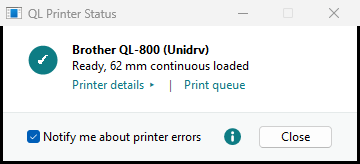
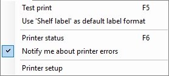

Printer status and notifications
When a label printer stops, Windows usually doesn't say why. QL Printer Status shows it, with the loaded roll and what to do.
-
The status window
Click Printer status in the toolbar, the roll in the status bar, or QL Printer Status in the Start menu. Every QL printer has a card: whether it is ready, which roll is loaded, and on an error, what to do. There is only one status window: if it is already open, it comes to the front.

Print queue opens the printer's jobs, for example to cancel a stuck one.
Printer details shows the model, the connection, the loaded roll and the driver version under the card; a second click hides them. Printers on the network also report their counters (pages, cuts, length printed), firmware, memory and serial number. Printers on USB or shared by another PC have no counters.
-
Notify me about printer errors
With this box ticked in the status window (or in the Printer menu), a small monitor runs in the notification area next to the clock. When a QL printer stops, a Windows notification appears at the bottom right with the reason and the fix, for example cover open, roll empty or wrong roll. For all QL printers and every program.

The monitor starts with Windows and needs no administrator rights. While it is off, a tip above the list suggests turning it on (Turn on notifications, Don't show again).
-
Wrong roll
If the roll doesn't fit the job, the LED blinks red and the job leaves the queue without a message. The printer then doesn't answer until the cover is opened and closed again. To fix it:
- cancel the waiting jobs in the Print queue,
- open and close the roll cover,
- print again with a format for the loaded roll.